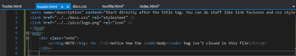
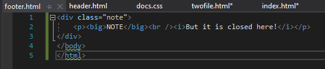

Now make two files. Call one header.html, and the other footer.html. In header.html, start typing from after where the title tag should be. Finish at where you want the main header to be. Close and save the file. In footer.html, type in the footer info and the closing bodyand title tags.
|  |  |
| You should have files that look like these ↑ |